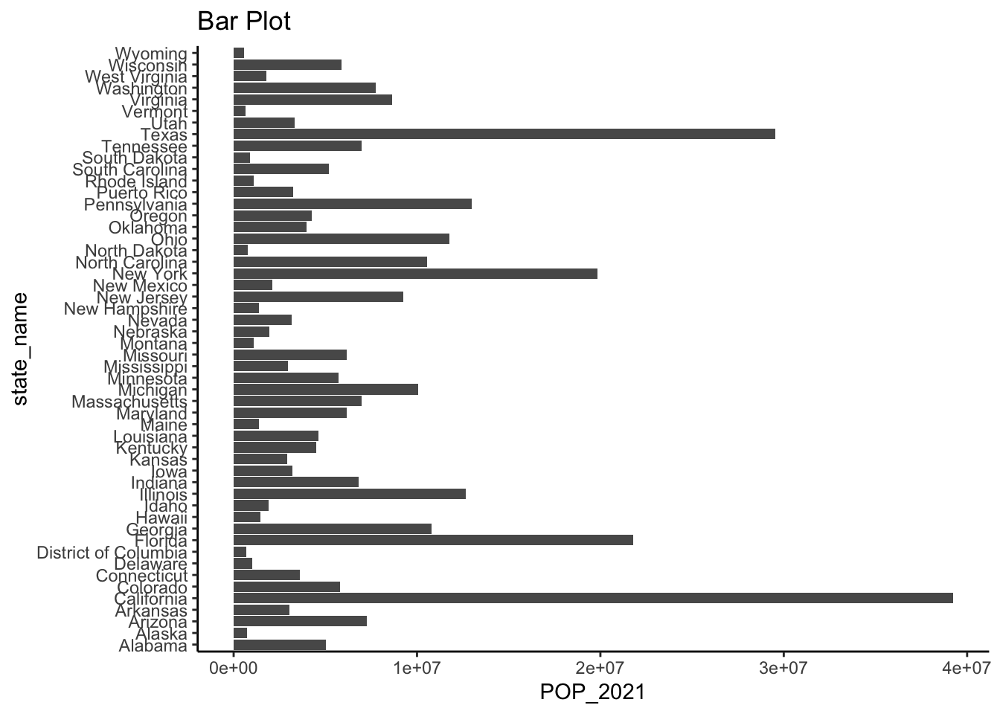
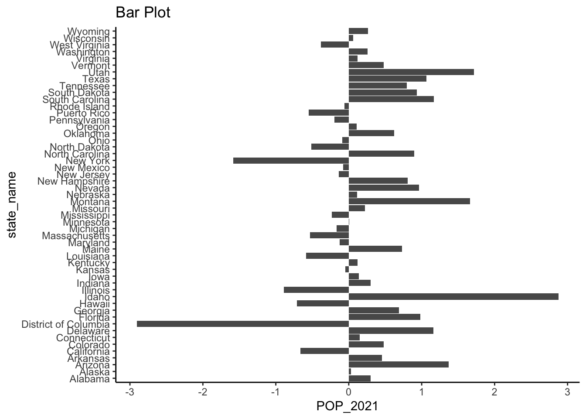
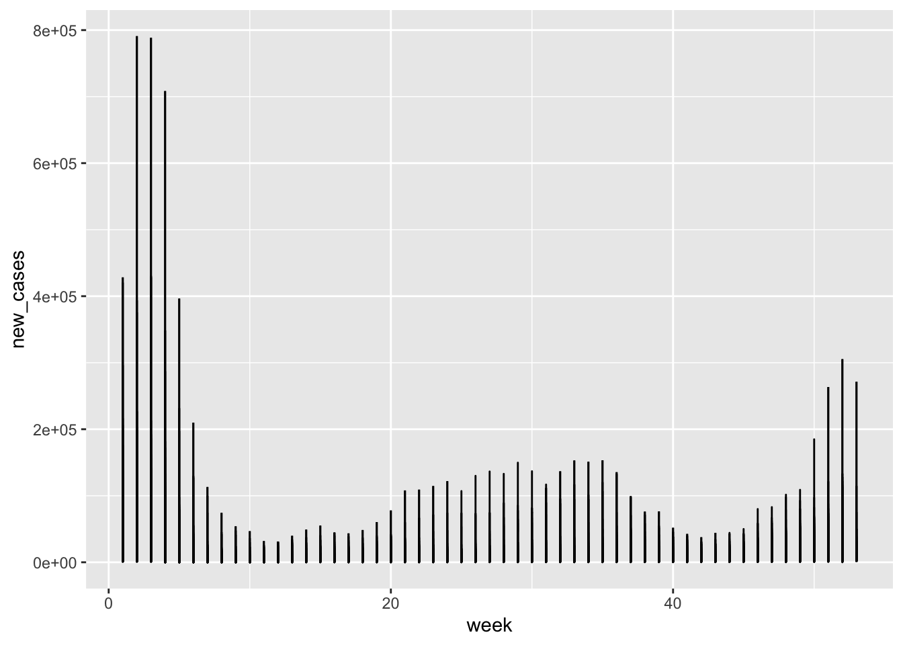

census_key <- "543933fee5a9c0e8d014f29fc9f2fc897715ade5"
census_key[1] "543933fee5a9c0e8d014f29fc9f2fc897715ade5"Get an API key from the US Census at [this link](https://api.census.gov/data/key_signup.html). Save it to an object called `census_key`.
census_key <- "543933fee5a9c0e8d014f29fc9f2fc897715ade5"
census_key[1] "543933fee5a9c0e8d014f29fc9f2fc897715ade5"api with the URL.api <- "https://api.census.gov/data/2021/pep/population"
api[1] "https://api.census.gov/data/2021/pep/population"request, without performing it. Compare the request to the examples in the documentation to see if you are on the right track.library(httr2)
request <- request(api) |>
req_url_query( get = I("POP_2020,POP_2021,NAME"),
'for' = I("state:*"),
key= census_key)4.Now perform the request and examine the data that is returned. Save the result to request (overwrite it).
request <- request |> req_perform()
request<httr2_response>GET
https://api.census.gov/data/2021/pep/population?get=POP_2020,POP_2021,NAME&for=state:*&key=543933fee5a9c0e8d014f29fc9f2fc897715ade5Status: 200 OKContent-Type: application/jsonBody: In memory (2112 bytes)We see the request returned data in JSON format. We can see the content with the function req_body_json, but we want a data frame. Use the jsonlite package to convert the raw JSON data into a data frame. Save it in population.
library(jsonlite)
library(janitor)Warning: package 'janitor' was built under R version 4.1.2
Attaching package: 'janitor'The following objects are masked from 'package:stats':
chisq.test, fisher.testpopulation<- request |> resp_body_string() |> fromJSON(flatten = TRUE)population to a tidy dataset. Remove the state ID column and change the name of the column with state names to state_name. Add a column with state abbreviations called state. Make sure you assign the abbreviations for DC and PR correctly. Hint: Start by using the janitor package to make the first row the header.library(tidyverse)Warning: package 'tidyverse' was built under R version 4.1.2Warning: package 'tibble' was built under R version 4.1.2Warning: package 'tidyr' was built under R version 4.1.2Warning: package 'forcats' was built under R version 4.1.2── Attaching core tidyverse packages ──────────────────────── tidyverse 2.0.0 ──
✔ dplyr 1.1.4 ✔ readr 2.1.5
✔ forcats 1.0.0 ✔ stringr 1.5.1
✔ ggplot2 3.4.4 ✔ tibble 3.2.1
✔ lubridate 1.9.3 ✔ tidyr 1.3.0
✔ purrr 1.0.2
── Conflicts ────────────────────────────────────────── tidyverse_conflicts() ──
✖ dplyr::filter() masks stats::filter()
✖ purrr::flatten() masks jsonlite::flatten()
✖ dplyr::lag() masks stats::lag()
ℹ Use the conflicted package (<http://conflicted.r-lib.org/>) to force all conflicts to become errorslibrary(janitor)
library(dplyr)
population = population |> row_to_names(1,remove_row = TRUE) |> as_tibble() |> select( -state) |> rename(state_name=NAME)
#join5 the state abbreviation (built from the web not directly from the API)
abb_state= read.csv('/Users/giacomocorleone/Downloads/state_abb.csv')
abb_state= abb_state|> rename(state_name= STATE.TERRITORY.) |> rename(code= STATE.TERRITORY..1) |> select(state_name,code)
#join codes to population dataframe
population <- left_join(population, abb_state, by = "state_name")
population<- population |> rename(state= code)
population <- population %>%pivot_longer(cols = starts_with("POP_"), names_to = "year", values_to = "population")As a check, make a barplot of states’ 2021 population
library(ggplot2)
population <- population |> mutate(population= as.numeric(population))
pop_2021= population |> filter( year=="POP_2021")
pop_2021 |> ggplot(aes(state_name, population)) + geom_bar(stat = "identity") + labs(title = "Bar Plot", x = "state_name", y = "POP_2021") + theme_classic() + coord_flip() 
To practice pivot_wider make a bar plot of percent change in population by state.
df_wider <- population |> pivot_wider(names_from = year, values_from = population)
df_wider= df_wider |> mutate(percent_change = (POP_2021 - POP_2020) / POP_2020 * 100)
df_wider |> ggplot(aes(state_name, percent_change)) + geom_bar(stat = "identity") + labs(title = "Bar Plot", x = "state_name", y = "POP_2021") + theme_classic() + coord_flip() 
cdc_regions_list <- list(
"1" = c("Connecticut", "Maine", "Massachusetts", "New Hampshire", "Rhode Island", "Vermont"),
"2" = c("New Jersey", "New York", "Puerto Rico", "Virgin Islands"),
"3" = c("Delaware", "District of Columbia", "Maryland", "Pennsylvania", "Virginia", "West Virginia"),
"4" = c("Alabama", "Florida", "Georgia", "Kentucky", "Mississippi", "North Carolina", "South Carolina", "Tennessee"),
"5" = c("Illinois", "Indiana", "Michigan", "Minnesota", "Ohio", "Wisconsin"),
"6" = c("Arkansas", "Louisiana", "New Mexico", "Oklahoma", "Texas"),
"7" = c("Iowa", "Kansas", "Missouri", "Nebraska"),
"8" = c("Colorado", "Montana", "North Dakota", "South Dakota", "Utah", "Wyoming"),
"9" = c("Arizona", "California", "Hawaii", "Nevada", "American Samoa", "Commonwealth of the Northern Mariana Islands", "Federated States of Micronesia", "Guam", "Marshall Islands", "Republic of Palau"),
"10" = c("Alaska", "Idaho", "Oregon", "Washington"))
cdc_regions <- do.call(rbind, lapply(names(cdc_regions_list), function(region) {
data.frame(region = region, state_name = cdc_regions_list[[region]])
})) |>
mutate(region = factor(as.numeric(region)))
population <- left_join(population, cdc_regions, by = "state_name") Go to https://data.cdc.gov/ and learn about the CDC API for COVID-19 data. Find an API that provides state level data from SARS-COV2 cases and store it in a data frame.
api <- "https://data.cdc.gov/resource/pwn4-m3yp.json"
request2 <-request(api) |>
req_url_query("$limit" = 10000000) |>
req_perform() |> resp_body_string() |>
fromJSON(flatten = TRUE)Note that we obtained weekly data. Wrangle the table so that keep only states for which you have population data. Keep the following variables: state, epidemiological week and year, and new cases (as numbers). Order by state, then chronologically. Hint: Use as_date, epiweek and epiyear functions in lubridate package.
library(lubridate)
request2<- request2 |> semi_join(population, by = "state") |> mutate(start_date = as_date(start_date),
end_date = as_date(end_date),
epiweek_start = epiweek(start_date),
epiweek_end = epiweek(end_date),
epiyear_start = epiyear(start_date),
epiyear_end = epiyear(end_date)) |>
select(state, epiweek_end, epiyear_end, new_cases) |>
arrange(state, epiweek_end)
# new_cases = tot_cases - lag(tot_cases, default = 0))
request2[,4]=as.numeric(request2[,4])api<- "https://data.cdc.gov/resource/39z2-9zu6.json"
get_cdc_data <- function(api){
request2 <-request(api) |>
req_url_query("$limit" = 10000000) |>
req_perform() |> resp_body_string() |>
fromJSON(flatten = TRUE)
}hosp_raw <- get_cdc_data(api)
#that's daily clearlyCollapse the data into weekly data and keep the same columns as in the cases dataset, except keep total weekly hospitalizations instead of cases. Remove weeks with less than 7 days reporting.
hosp_raw$collection_date <- as.Date(hosp_raw$collection_date)
hosp_raw$week <- epiweek(hosp_raw$collection_date)
hosp_raw$year <- epiyear(hosp_raw$collection_date)
hosp_raw <- hosp_raw |> rename(state = jurisdiction)|> group_by( state, week, year) |> mutate(across(contains("covid_"), as.numeric)) |> select(state, new_covid_19_hospital, week, year)
#count the number of reports x week by state
weekly_state_counts <- hosp_raw |>
group_by(state, year, week) |>
summarise(num_reports = n())`summarise()` has grouped output by 'state', 'year'. You can override using the
`.groups` argument.#filtering out count number less then 7
hosp<- hosp_raw |>
inner_join(weekly_state_counts, by = c("state", "year", "week")) %>%
filter(num_reports >=7)Repeat what you did in the previous two exercises for provisional COVID-19 deaths.
api<- "https://data.cdc.gov/resource/r8kw-7aab.json"
deaths_raw <- get_cdc_data(api)
deaths_raw$end_date <- as.Date(deaths_raw$end_date)
colnames(deaths_raw)[6]= "week"
colnames(deaths_raw)[5]= "year"
deaths <- deaths_raw |> group_by( state, week, year) |> mutate(across(contains("covid_"), as.numeric)) |> select(state, covid_19_deaths , week, year)
deaths$week=as.numeric(deaths$week)
deaths$year=as.numeric(deaths$year)Warning: NAs introduced by coerciondeaths= deaths |> filter(!is.na(year))
colnames(deaths)[1]="state_name"Obtain vaccination data. Keep the variables series_complete and booster along with state and date. Remember we will later want to join with the others.
api<- "https://data.cdc.gov/resource/rh2h-3yt2.json"
vax_raw <- get_cdc_data(api)
vax_raw$date <- as.Date(vax_raw$date)
colnames(vax_raw)[3]= "week"
vax_raw$year <- epiyear(vax_raw$date)
colnames(vax_raw)[4]= "state"
vax<- vax_raw |> group_by( state, week, year) |> mutate(across(contains("daily"), as.numeric)) |> select(state , week, year, series_complete_daily, booster_daily)Now we are ready to join the tables. We will only consider 2020 and 2021 as we don’t have population sizes for 2020. However, because we want to guarantee that all dates are included we will create a data frame with all possible weeks. We can use this:
all_dates <- data.frame(date = seq(make_date(2020, 1, 25), make_date(2021, 12, 31), by = "week")) |>
mutate(date = ceiling_date(date, unit = "week", week_start = 7) - days(1)) |>
mutate(mmwr_year = epiyear(date), mmwr_week = epiweek(date))
dates_and_pop <- cross_join(population, all_dates)Use this to join all the tables in a way that preserves these dates. Call the final table dat.
#correct colnames in request2 and in general correct to make the data frames compatible to be joined
colnames(request2)[2:3] =c("week", "year")
#add state codes do deaths for the joining
state_name=unique(dates_and_pop$state_name)
state=unique(dates_and_pop$state)
codes=as.data.frame(cbind(state_name, state))
deaths <- left_join(deaths,codes, by = "state_name") |> filter(!is.na(state)) |> select(!state_name)Adding missing grouping variables: `state_name`#correct vax dataframe
vax$week=as.numeric(vax$week)
#make a full data frame of all different dataframes
dat <- full_join(request2, hosp, by = c("state","year","week")) |>
full_join(deaths, by = c("state","year","week")) |>
full_join(vax, by = c("state","year","week"))Warning in full_join(full_join(full_join(request2, hosp, by = c("state", : Detected an unexpected many-to-many relationship between `x` and `y`.
ℹ Row 1 of `x` matches multiple rows in `y`.
ℹ Row 85315 of `y` matches multiple rows in `x`.
ℹ If a many-to-many relationship is expected, set `relationship =
"many-to-many"` to silence this warning.Plot a trend plot with cases per person for all states with color representing region.
dat |> ggplot(aes(week,new_cases)) + geom_line()Warning: Removed 3301 rows containing missing values (`geom_line()`).